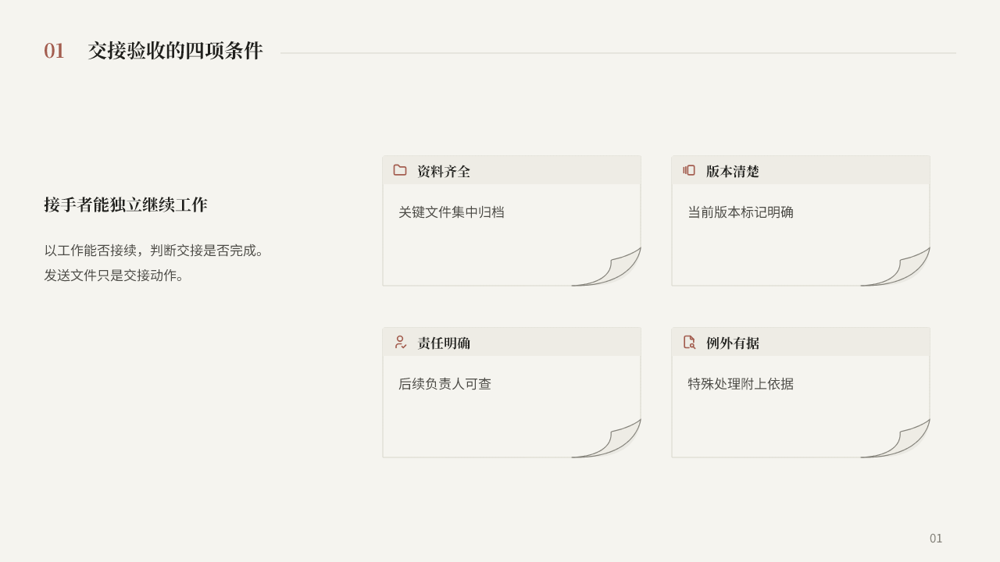
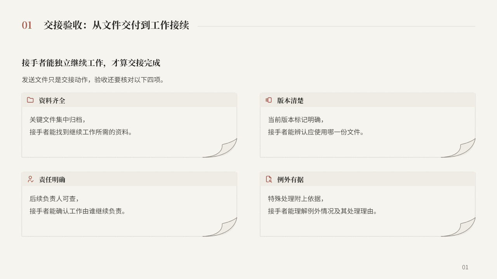

P1 · 原短稿
左侧表达验收主张，右侧展开四项并列条件。

两版使用同一份稿件、相同文字坐标与字号、相同项目区域。切换时只改变普通色块与便签设计，页面编排不动。
左侧表达验收主张，右侧展开四项并列条件。

主张与两列解释沿页面展开。四项说明与上一轮常规稿相同，仅重新断行。

同稿／同文字坐标／同区域检查 · 先行排版方案 · 实现与范围 · 返回三页看板
本轮由主任务完成；便签版通过真实 invokeStructure 自定义构建调用，复用原便签曲线、标题与图标。属于 P1 实验适配，未冒充已登记 preserved-design 接口，也未改正式 Layout。